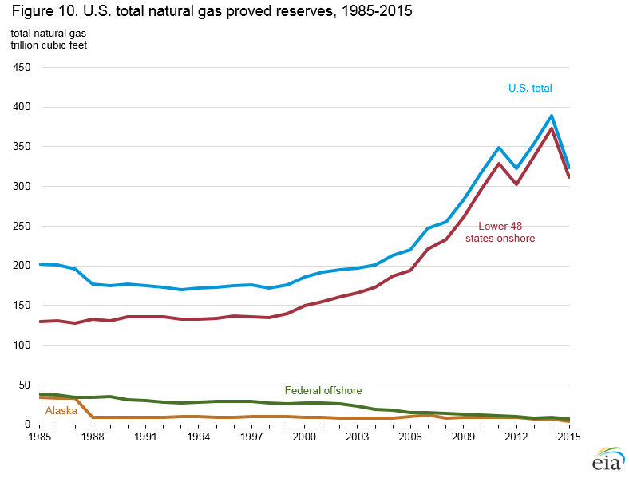

Natural Gas
U.S. Crude Oil and Natural Gas Proved Reserves, Year-end 2015
With Data for 2015 | Release Date: December 14, 2016 | Next Release Date: December 2017 | full report
Previous Issues:
Between year-end 2014 and year-end 2015, U.S. crude oil and lease condensate proved reserves decreased from 39.9 billion barrels to 35.2 billion barrels—a decrease of 4.7 billion barrels (11.8%). Over the same period, proved reserves of U.S. total natural gas1decreased by 64.5 trillion cubic feet (Tcf) (16.6%), declining from 388.8 Tcf in 2014 to 324.3 Tcf. The average West Texas Intermediate (WTI) crude oil spot prices declined almost 50% (from $95 per barrel in 2014 to $50 per barrel in 2015), and the average spot price of natural gas at the Louisiana Henry Hub declined more than 40% from $4.55 per million Btu in 2014 to $2.62 per million Btu in 2015. The significant reduction in prices, which resulted in a more challenging characterization of existing economic and operating conditions that are considered in the definition of proved reserves, led to downward revisions across a broad range of U.S. producers.
Oil highlights
- The average price of oil in 2015 dropped 47% compared to 2014, causing operators to postpone or cancel development plans and revise their proved reserves of crude oil and lease condensate downward. As a result, U.S. proved reserves declined by 11.8% (4.7 billion barrels) in 2015.
- U.S. production of crude oil and lease condensate increased in 2015 for the seventh consecutive year, increasing by 7% from 2014.
- Crude oil and lease condensate extensions were highest in Texas and North Dakota in 2015. However, as a result of downward revisions, both states experienced a net reduction in proved reserves.
- New Mexico experienced the largest net increase in proved reserves of crude oil and lease condensate of all states in 2015, mostly from development of the Wolfcamp shale and Bone Spring plays in southeastern New Mexico’s portion of the Delaware Basin.
Natural gas highlights
- The average price of natural gas in 2015 dropped 42% compared to 2014, causing operators to revise their reserves downward, just as they did with oil reserves. U.S. proved natural gas reserves declined 16.6% (64.5 Tcf) in 2015.
- In 2015, Ohio added more than 5 Tcf of natural gas proved reserves (in the Utica Shale play), and surpassed Arkansas and the Gulf of Mexico to become the ninth-largest natural gas reserves state.
- U.S. production of total natural gas increased for the tenth consecutive year, increasing by 4% from 2014.
How can production go up when proved reserves are going down?
Generally, when oil or natural gas prices fall or operating costs rise, the life of a producing well may be shortened by reducing the remaining proved reserves that are economically recoverable, and may cancel or postpone planned offset wells. This may reduce the estimate of proved reserves, even if production is increasing (usually because of a large number of new wells drilled and completed prior to the price drop/cost increase). Changes in annual production can therefore lag behind the year in which changes in proved reserves are reported. A drilled and completed well is usually required to have proved reserves. However, proved reserves can be assigned to a planned well, based on surrounding wells and the geological and engineering data of these wells (if the planned well will be drilled within five years). It's important to remember that production cannot increase or maintain a certain level for very long without continued development or enhanced oil recovery methods. Production will inevitably decline in their absence.
Proved reserves are estimated volumes of hydrocarbon resources that analysis of geologic and engineering data demonstrates with reasonable certainty2 are recoverable under existing economic and operating conditions.
Reserves estimates change from year to year as new discoveries are made, as existing fields are more thoroughly appraised, as existing reserves are produced, and as prices and technologies evolve.
Sustained low prices for oil and natural gas continued through most of 2016, and downward reserves revisions are likely in EIA's next report for year-end 2016, but probably not to the same degree as in 2015. Lower prices have curtailed drilling and made the economics more challenging in 2016. Although technically recoverable resource estimates are not necessarily reduced by lower prices, the calculation of proved reserves is sensitive to price changes.
National summary
In 2015, U.S. crude oil and lease condensate proved reserves decreased 4.7 billion barrels (11.8%) to 35.2 billion barrels (Table 1). Crude oil and lease condensate reserves last declined in 2008 (Figure 1). Proved reserves of U.S. total natural gas decreased 64.5 trillion cubic feet (Tcf) to 324.3 Tcf in 2015 (Table 1). For both fuels, the net downward revisions to reserves exceeded both the total discoveries and the estimated production for 2015.

| Crude oil and lease condensate billion barrels |
Total natural gas trillion cubic feet |
|
|---|---|---|
| U.S. proved reserves at December 31, 2014 | 39.9 | 388.8 |
| Total discoveries | 3.2 | 34.7 |
| Net revisions | -5.6 | -80.8 |
| Net adjustments, sales, acquisitions | 1.1 | 10.8 |
| Estimated production | -3.4 | -29.3 |
| Net additions to U.S. proved reserves | -4.7 | -64.5 |
| U.S. proved reserves at December 31, 2015 | 35.2 | 324.3 |
| Percent change in U.S. proved reserves | -11.8% | -16.6% |
| Notes: Total natural gas includes natural gas plant liquids. Columns may not add to total because of independent rounding. Source: U.S. Energy Information Administration, Form EIA-23L, Annual Survey of Domestic Oil and Gas Reserves |
||
Proved reserves of crude oil and lease condensate decreased in each of the top five U.S. oil reserves states in 2015 (Figure 2). In 2015, Texas had the largest proved reserves of any state but also the largest decline—a net decrease of 1 billion barrels of crude oil and lease condensate proved reserves from 2014 to 2015. Although significant reserves additions (in the form of field extensions) were made in the Wolfcamp and Eagle Ford shale plays, these additions were countered by net downward revisions within the Lone Star State. North Dakota, dominated by the Bakken shale play within the Williston Basin, had the second-largest proved reserves, and similarly, the second largest decline in 2015, a net decrease of 838 million barrels of crude oil and lease condensate proved reserves.

Proved natural gas reserves decreased in each of the top five U.S. gas reserves states in 2015 (Figure 3). Texas was the largest natural gas reserves state, and it had the largest net decrease (-20.6 Tcf) in 2015. Pennsylvania and Oklahoma (the second and third largest natural gas proved reserves states, respectively) had large net downward revisions, but the declines were partially offset by developments in the Marcellus and Woodford shale plays. These offsets reduced the decline in these states to just 3.9 and 3.6 Tcf in 2015.

Official EIA Oil and Gas Production Data
The production numbers in the tables and figures of this report are offered only as an indicator of production trends and may differ from EIA's official production numbers based on state-reported data, which are provided on the EIA website for oil and natural gas. Specifically, the production estimates in this report are based on data reported on Form EIA-23L, Annual Report of Domestic Oil and Gas Reserves. They may differ from estimates published by EIA in the Petroleum Supply Annual 2015, DOE/EIA-0340(15) and the Natural Gas Annual 2015, DOE/EIA-0131(15).
U.S. oil production increased 7% in 2015, and imports of crude oil increased slightly (less than 1%) from the 2014 level (Figure 4).

figure data
U.S. natural gas production increased 4% in 2015, and natural gas imports remained level (Figure 5).

Background
This report provides estimates of U.S. proved reserves of crude oil and lease condensate and proved reserves of natural gas at year-end 2015. The U.S. Energy Information Administration (EIA) starts with the data filed on Form EIA-23L, Annual Report of Domestic Oil and Gas Reserves, which was submitted by 450 of 467 sampled operators of U.S. oil and natural gas fields. EIA then estimates proved reserves for the U.S., states, and state subdivisions.
Proved reserves are estimated volumes of hydrocarbon resources that analysis of geologic and engineering data demonstrates with reasonable certainty are recoverable under existing economic and operating conditions. Reserves estimates change from year to year as new discoveries are made, as existing fields are more thoroughly appraised, as existing reserves are produced, and as prices and technologies change.
Discoveries include new fields, identification of new reservoirs in previously discovered fields, and extensions, which are additions to reserves that result from additional drilling and exploration in previously discovered reservoirs. In a given year, extensions are typically the largest percentage of total discoveries. Although discoveries of new fields and reservoirs are important indicators of new resources, they generally account for a small percentage of overall annual reserve additions.
Revisions primarily occur when operators change their estimates of what they will be able to produce from the properties they operate in response to changing prices or improvements in technology. Higher fuel prices typically increase estimates (positive revisions) as operators consider a broader portion of the resource base economically producible, or proved. Lower prices, on the other hand, generally reduce estimates (negative revisions) as the economically producible base diminishes.
The 2015 reporting period represents the seventh year companies reporting to the U.S. Securities and Exchange Commission (SEC) followed revised rules for determining the prices underpinning their proved reserves estimates. Designed to make estimates less sensitive to price fluctuations during the year, the SEC rules require companies to use an average of the 12 first-day-of-the-month prices.
Because actual prices received by operators depend on their contractual arrangements, location, hydrocarbon quality, and other factors, spot market prices are not necessarily the prices used by operators in their reserve estimates for EIA. However, they do provide a benchmark or trend indicator. The 12-month, first-day-of-the-month, average WTI crude oil spot price for 2015 was $50 per barrel, a 47% decrease from 2014 (Figure 6).

The 12-month, first-day-of-the-month average natural gas spot price at the Louisiana Henry Hub for 2015 was $2.62 per million British thermal units (MMBtu), a 42% decrease from the previous year’s average spot price of $4.55 per MMBtu (Figure 7).

Prices in 2016. At the start of 2016, the spot price of WTI crude oil was at or near the lowest of the year.3 Throughout the rest of 2016, the price increased incrementally but did not exceed $50 per barrel until June 7. The price declined back below $40 per barrel on August 2, but increased back above $50 per barrel in October.
Compared with the 12-month, first-of-the-month 2015 average of $50 per barrel, the 12-month, first-of-the-month 2016 average WTI spot oil price decreased 15% to $42.60 per barrel. More net downward revisions in U.S. crude oil proved reserves in 2016 may be possible, but probably not to the same extent as was observed in this report for 2015.
The 12-month, first-of-the-month average natural gas spot price at the Henry Hub in Louisiana in 2015 was $2.62 per MMBtu. In 2016, natural gas spot prices remained below $3.00 per MMBtu until September—often well below. The average 12-month, first-of-the-month spot natural gas price at the Henry Hub decreased 6% in 2016, to $2.46 per MMBtu. As with oil, some net downward revisions in U.S. natural gas proved reserves may be possible in the 2016 reserves report.
Throughout 2015 and continuing into 2016, the number of U.S. rotary rigs in operation declined. Fewer new discoveries and extensions of existing fields are anticipated for 2016, combined with possible net downward revisions. These factors could negatively affect both crude oil and natural gas reserves in 2016. U.S. production of crude oil and natural gas, which rose in 2015, may be negatively affected by reduced drilling in 2016.
Crude oil and lease condensate proved reserves
U.S. crude oil and lease condensate proved reserves decreased for the first time in seven years in 2015 (Figure 8). The average price of oil in 2015 dropped 47% compared to 2014, causing operators to postpone or cancel development plans and revise their proved reserves of crude oil and lease condensate downward. In the past 20 years, declines in reserves were observed in 1995, 1996, 1998, 2003, 2004, 2006, and 2008.

U.S. crude oil and lease condensate proved reserves decreased by 11.8% (4.7 billion barrels) in 2015, mostly attributable to negative net revisions to the proved reserves of existing fields (Figure 9a).
Proved reserves of crude oil and lease condensate declined the most in Texas in 2015. Although Texas had the most total discoveries of crude oil and lease condensate proved reserves in 2015 (almost 1.4 billion barrels), this volume was canceled by over 1.7 billion barrels of net downward revisions. After the net of acquisitions, sales and adjustments were added in, and the state’s annual production (over 1.2 billion barrels) was taken out, Texas crude oil and lease condensate proved reserves declined by 7% (1,001 million barrels) in 2015.
North Dakota had the second-largest net decrease in crude oil and lease condensate proved reserves in 2015. Total discoveries added 0.6 billion barrels of crude oil and lease condensate proved reserves, but net downward revisions reduced the state total by 1 billion barrels. At year-end 2015 (after state production of 0.4 billion barrels), North Dakota crude oil and lease condensate proved reserves decreased 14% (838 million barrels).

A sustained low price environment in 2015 caused the large volume of negative net revisions and also reduced the annual volume of extensions to existing fields (Figure 9b).

A producing area of the United States that actually added proved reserves in 2015 was the Permian Basin of west Texas and eastern New Mexico. Although the state total declined in Texas in 2015, one state subdivision—Texas Railroad Commission (RRC) District 8—added a net 681 million barrels of proved reserves of crude oil and lease condensate in 2015, mostly from extensions to existing Permian Basin fields. Across the border in eastern New Mexico, development of the Wolfcamp shale (and other stacked producing formations such as the Bone Spring carbonate, the Strawn sandstone, and the Avalon shale) added 31 million barrels of proved reserves.
As of December 31, 2015, tight plays4 accounted for 33% of all U.S. crude oil and lease condensate proved reserves. Most of these proved reserves (93%) came from six tight oil plays (Table 2). The Bakken/Three Forks play in the Williston Basin remained the largest oil-producing tight play in the United States in 2015. EIA has a series of maps and animations showing the nation's shale and other tight play (providing oil and natural gas) resources.
| Basin | Play | State(s) | 2014 Production |
2014 Reserves |
2015 Production |
2015 Reserves |
Change 2014-15 Reserves |
|---|---|---|---|---|---|---|---|
| Williston | Bakken/Three Forks | ND, MT, SD | 387 | 5,972 | 421 | 5,030 | -942 |
| Western Gulf | Eagle Ford | TX | 497 | 5,172 | 565 | 4,295 | -877 |
| Permian | Bone Spring, Wolfcamp | NM, TX | 53 | 722 | 66 | 782 | 60 |
| Denver | Niobrara* | CO, KS, NE, WY | 42 | 512 | 58 | 460 | -52 |
| Appalachian | Marcellus* | PA, WV | 13 | 232 | 16 | 143 | -89 |
| Fort Worth | Barnett | TX | 9 | 47 | 5 | 33 | -14 |
| Subtotal | 1,001 | 12,657 | 1,131 | 10,743 | -1,914 | ||
| Other tight | 56 | 708 | 83 | 859 | 151 | ||
| U.S. tight oil | 1,057 | 13,365 | 1,214 | 11,602 | -1,763 | ||
| Notes: Includes lease condensate. Bakken/Three Forks oil includes proved reserves from shale or low-permeability formations reported on Form EIA-23L
Other tight includes proved reserves from shale formations reported on Form EIA-23L not assigned by EIA to the Bakken/Three Forks, Barnett, Bone Spring, Eagle Ford, Marcellus, Niobrara, or Wolfcamp tight plays. *The Niobrara estimate may contain some reserves from the Codell sandstone. The Marcellus play in this table refers only to portions within Pennsylvania and West Virginia. Source: U.S. Energy Information Administration, Form EIA-23L, Annual Report of Domestic Oil and Gas Reserves, 2014 and 2015 |
|||||||
Total discoveries. Total discoveries added 3.2 billion barrels to U.S. crude oil and lease condensate reserves in 2015. Total discoveries consist of discoveries of new fields, identification of new reservoirs in fields discovered in prior years, and extensions (reserve additions that result from the additional drilling and exploration in previously discovered reservoirs).
Geographically, the largest total discoveries of crude oil and lease condensate proved reserves in 2015 were in Texas, North Dakota, and Oklahoma. Texas had total discoveries of 1.4 billion barrels, North Dakota had 0.6 billion barrels, and Oklahoma had 0.4 billion barrels in 2015. Total discoveries in the federal Gulf of Mexico were 108 million barrels, 20 million barrels of which came from new field discoveries. In 2015, all U.S. new field discoveries were in the federal Gulf of Mexico.
Net revisions and other changes. Revisions to reserves occur primarily when operators change their estimates of what they are able to economically produce from the properties they operate using existing technology and current economic conditions. Thus, current prices are critical in estimating economically producible reserves. Other changes occur when operators buy and sell properties (revaluing the proved reserves in the process), and as various adjustments are made to reconcile estimated volumes.
Net downward revisions decreased U.S. crude oil and lease condensate proved reserves by 5.6 billion barrels in 2015. Geographically, the largest net downward revisions of crude oil and lease condensate proved reserves were in Texas, North Dakota, and Alaska. Texas revised reserves downward by 1.7 billion barrels, North Dakota by 995 million barrels, and Alaska by 691 million barrels.
The net change to U.S. crude oil and lease condensate proved reserves associated with buying and selling properties was a drop of 30 million barrels in 2015. Adjustments (positive and negative reserves changes that EIA cannot attribute to any other category) increased U.S. proved oil reserves by 1.1 billion barrels.
Production. The United States produced an estimated 3.4 billion barrels 5 of crude oil and lease condensate in 2015, an increase of 7% from 2014. This level represents the country's seventh consecutive annual production increase. Production from the Lower 48 states was 8% above the 2014 level. Alaska experienced a 4% production decline.
Natural gas proved reserves
U.S. proved reserves of total natural gas (including natural gas plant liquids) decreased by 16.6% (64.5 Tcf) in 2015 (Figure 10). The average price of U.S. natural gas in 2015 dropped 42% compared to 2014, resulting in operators revising their 2015 natural gas proved reserves downward, just as they did with oil reserves (Figure 11a). At the state level, Texas and West Virginia reported the largest net decreases in natural gas proved reserves in 2015. Texas natural gas proved reserves declined by 20.6 Tcf, and West Virginia natural gas proved reserves declined by 9.3 Tcf. In contrast to these large decreases, Ohio added more than 5 Tcf of natural gas proved reserves in 2015, resulting from development of the Utica/Pt. Pleasant shale play in eastern Ohio. Ohio surpassed Arkansas and the federal Gulf of Mexico to become the state with the ninth-largest volume of natural gas proved reserves.
figure data
Total discoveries. The U.S. total of natural gas discoveries was 34.7 Tcf in 2015 (Table 3), of which 95% were extensions to existing natural gas fields (Figures 11a and 11b).


At the state level, total discoveries of natural gas reserves were highest in Pennsylvania and Texas, at 10.2 Tcf and 6.8 Tcf, respectively. However, both Pennsylvania and Texas reported overall net declines in their 2015 natural gas proved reserves, because discoveries were more than offset by negative net revisions. Ohio had the third-largest volume of total discoveries in 2015 (5.0 Tcf).
Total discoveries in Pennsylvania were from extensions in the Marcellus shale play, the largest natural gas shale play in the United States by reserves volume. Total discoveries in Texas were mostly from extensions to fields in the Permian Basin (TX RRC District 8), Eagle Ford shale play (TX RRC Districts 2 and 4), and the Barnett shale play (TX RRC District 5).
| Source of gas |
Year-end 2014 proved reserves | 2015 discoveries | 2015 revisions & other changes | 2015 production | Year-end 2015 proved reserves | |||
|---|---|---|---|---|---|---|---|---|
| Coalbed Methane | 15.7 | 0.1 | -2.0 | -1.3 | 12.5 | |||
| Shale | 199.7 | 25.9 | -34.8 | -15.2 | 175.6 | |||
| Other U.S. natural gas | ||||||||
| Lower 48 Onshore | 157.2 | 8.4 | -30.8 | -11.3 | 123.6 | |||
| Lower 48 Offshore | 9.4 | 0.3 | -0.4 | -1.3 | 8.0 | |||
| Alaska | 6.8 | 0.0 | -1.9 | -0.3 | 4.6 | |||
| U.S. TOTAL | 388.8 | 34.7 | -69.9 | -29.3 | 324.3 | |||
| Note: Lower 48 offshore includes state offshore and Federal offshore. Components may not add to total because of independent rounding. Source: U.S. Energy Information Administration, Form EIA-23L, Annual Survey of Domestic Oil and Gas Reserves, 2014 and 2015 |
||||||||
Net revisions and other changes. Net revisions decreased U.S. total natural gas proved reserves by 80 Tcf in 2015. The following states had the largest changes (positive and negative) in 2015 because of net revisions:
- Texas had the largest negative net revision of natural gas proved reserves of all states in 2015, a decrease of 22 Tcf. Within Texas, RRC District 5 (Barnett shale play) had the largest negative net revisions of all Districts at 6.2 Tcf.
- West Virginia had the second-largest negative net revision of natural gas proved reserves at 13.5 Tcf.
- Pennsylvania had the third-largest negative net revision of natural gas proved reserves at 12.5 Tcf, but this was mostly offset by 10.2 Tcf of extensions in the Marcellus shale play.
- Ohio was one of the few states in 2015 that had a positive net revision to its natural gas proved reserves. Ohio’s reserves were revised upward by 0.8 Tcf in addition to 5.0 Tcf of total discoveries in 2015.
The net change to natural gas proved reserves from the purchase and sale of properties resulted in an additional U.S. gain of 1.4 Tcf in 2015. The largest net acquisition of natural gas proved reserves in 2015 was in western New Mexico—where an operator that acquired properties in the San Juan Basin expects better results than the previous owner. Adjustments (annual reserves changes that EIA cannot attribute to any other category) to U.S. total natural gas proved reserves totaled 9.4 Tcf.
Production. Production. This report's estimate of U.S. production of total natural gas in 2015 was 29.3 Tcf, an increase of 4% from 2014.6 EIA's official published estimate of marketed natural gas production was 28.8 Tcf in 2015, an increase of 4.5% from 2014. Both of these estimates are record-high levels for the United States, and this is the tenth consecutive year that U.S. natural gas production (the estimate published in this report) has increased.
On a geographic basis, Pennsylvania had the largest increase in natural gas production by volume, a gain of 0.6 Tcf (13%). Ohio had the second-largest increase, 0.5 Tcf, which almost doubled that state’s production compared to 2014. The state with the largest estimated decline in natural gas production in 2015 was Louisiana (a drop of 0.15 Tcf, or 8%).
Nonassociated natural gas
Nonassociated natural gas, also called gas well gas, is defined as natural gas not in contact with significant quantities of crude oil in a reservoir. EIA considers most shale natural gas and all coalbed natural gas to be nonassociated natural gas proved reserves. Proved reserves of U.S. nonassociated natural gas decreased by 60.9 Tcf in 2015, a 19% decrease from 2014 (Table 11). Estimated production of U.S. nonassociated natural gas increased 1%—from 22.8 Tcf in 2014 to 23.1 Tcf in 2015. The largest increase in nonassociated natural gas production was in Pennsylvania (Marcellus Shale)—where annual nonassociated natural gas production increased from 4.2 Tcf in 2014 to 4.8 Tcf in 2015.
Associated-dissolved natural gas
Associated-dissolved natural gas, also called casinghead gas, is defined as the combined volume of natural gas that occurs in crude oil reservoirs either as free gas (associated) or as gas in solution with crude oil (dissolved). Proved reserves of associated-dissolved natural gas decreased from 69.1 Tcf in 2014 to 65.5 Tcf in 2015—a decrease of 5% (3.6 Tcf) (Table 12). Estimated production of associated-dissolved natural gas increased 17%—from 5.3 Tcf in 2014 to 6.2 Tcf in 2015. The largest increase in associated-dissolved natural gas production in 2015 was in Texas, specifically in Texas RRC Districts 1, 2, and 8, coinciding with the gains in oil production from the Eagle Ford Shale play and from the Permian Basin.
Coalbed natural gas
Coalbed natural gas, also called coalbed methane, is a type of natural gas contained in and removed from coal seams. Extraction requires drilling wells into the coal seams and removing water contained in the seams to reduce hydrostatic pressure and to release adsorbed (and free) natural gas from the coal. Proved reserves of U.S. coalbed natural gas decreased from 15.7 Tcf in 2014 to 12.5 Tcf in 2015, a 20% drop (Tables 15 and 16). Estimated production of coalbed natural gas decreased 10%—from 1.40 Tcf in 2014 to 1.27 Tcf in 2015. Among individual states, New Mexico experienced the largest decrease (0.9 Tcf) in proved reserves of coalbed methane, followed by Wyoming and Colorado (declining by 0.8 Tcf and 0.7 Tcf, respectively). No states reported an increase in coalbed methane proved reserves in 2015.
Natural gas from shale
Shale formations can be both the source rock and the production zone. Tight shale formations must typically be hydraulically fractured to produce natural gas at economic rates. Horizontally-drilled wells perform substantially better than conventional vertical wells (but are more expensive to drill and complete at the same depth). Proved reserves of U.S. natural gas from shale decreased from 199.7 Tcf in 2014 to 175.6 Tcf in 2015.
The share of natural gas from shale compared with total U.S. natural gas proved reserves increased from 51% in 2014 to 54% in 2015 (Figure 12). Estimated production of natural gas from shale increased 13%–from 13.4 Tcf in 2014 to 15.2 Tcf in 2015.

Pennsylvania had the highest level of natural gas proved reserves from shale in 2015 (53.5 Tcf), and Texas had the second highest level (42.6 Tcf) (Figure 13). West Virginia (19.2 Tcf) remained the third largest. Oklahoma (18.6 Tcf) was the fourth-largest shale gas proved reserves state. Ohio became the fifth-largest shale gas proved reserves state in 2015 (Utica/Pt. Pleasant Shale proved reserves rose to 12.4 Tcf), and Louisiana and Arkansas were the sixth- and seventh-largest, respectively.

Seven shale plays contained 91% of U.S. shale gas proved reserves at the end of 2015 (Table 4). The Marcellus Shale play remained the play with the largest amount of natural gas proved reserves from shale, even though its total declined the most (11.8 Tcf, a 14% decline in proved reserves) in 2015. The second-largest shale gas play was the Eagle Ford, where proved reserves declined 17% in 2015.
| Change 2015-2014 | ||||||||
|---|---|---|---|---|---|---|---|---|
| Basin | Shale Play | State(s) | 2014 production | reserves | 2015 production | reserves | Production | Reserves |
| Appalachian | Marcellus* | PA, WV | 4.9 | 84.5 | 5.8 | 72.7 | 0.9 | -11.8 |
| Western Gulf | Eagle Ford | TX | 1.9 | 23.7 | 2.2 | 19.6 | 0.3 | -4.0 |
| Arkoma, Anadarko, S.OK | Woodford | OK | 0.8 | 16.6 | 1.0 | 18.6 | 0.1 | 2.0 |
| Fort Worth | Barnett | TX | 1.8 | 24.3 | 1.6 | 17.0 | -0.2 | -7.3 |
| TX-LA Salt | Haynesville/Bossier | LA, TX, | 1.4 | 16.6 | 1.4 | 12.8 | 0.0 | -3.8 |
| Appalachian | Utica/Pt. Pleasant | OH | 0.4 | 6.4 | 1.0 | 12.4 | 0.5 | 6.0 |
| Arkoma | Fayetteville | AR | 1.0 | 11.7 | 0.9 | 7.1 | -0.1 | -4.5 |
| Sub-total | 12.3 | 183.7 | 13.8 | 160.3 | 1.5 | -23.4 | ||
| Other shale | 1.1 | 15.9 | 1.4 | 15.3 | 0.3 | -0.7 | ||
| All U.S. shale | 13.4 | 199.7 | 15.2 | 175.6 | 1.8 | -24.1 | ||
| Note: Table values are based on natural gas proved reserves and production volumes from shale reported and imputed from data on Form EIA-23L. For certain reasons (e.g., incorrect or incomplete submissions, misidentification of shale versus nonshale reservoirs), the actual proved reserves and production of natural gas from shale plays may be higher or lower. * In this table, the Marcellus Shale play refers only to portions within Pennsylvania and West Virginia. Other shale includes fields reported as shale on Form EIA-23L not assigned by EIA to the Marcellus, Barnett, Haynesville/Bossier, Eagle Ford, Woodford, Utica/Pt. Pleasant, or Fayetteville shale plays. Columns may not add to subtotals due to independent rounding. Sources: U.S. Energy Information Administration, Form EIA-23L, Annual Report of Domestic Oil and Gas Reserves, 2014 and 2015 |
||||||||
The proved reserves of shale gas in the Barnett Shale play decreased by 7.3 Tcf in 2015; it remains the oldest and fourth-largest shale gas play in the United States. EIA has a series of maps showing the nation’s shale gas resources for both shale plays and geologic basins.
Dry natural gas
Dry natural gas is the volume of natural gas (primarily methane) that remains after natural gas liquids and non-hydrocarbon impurities are removed from the natural gas stream, usually downstream at a natural gas processing plant. Not all produced gas has to be processed at a natural gas processing plant. Some produced gas is dry without processing.
In 2015, the estimated dry natural gas content of U.S. total natural gas proved reserves decreased from 368.7 Tcf in 2014 to 307.7 Tcf, a 16% drop (Table 17).
Lease condensate and natural gas plant liquids
Operators of natural gas fields report lease condensate reserves and production estimates to EIA on Form EIA-23L, Annual Report of Domestic Oil and Gas Reserves. EIA calculates the expected yield of natural gas plant liquids using estimates of total natural gas reserves and a recovery factor determined for each area of origin. Data from Form EIA-64A, Annual Report of the Origin of Natural Gas Liquids Production, are the basis of EIA's recovery factors.
Lease condensate
Lease condensate is a mixture consisting primarily of hydrocarbons heavier than pentanes that is recovered as a liquid from natural gas in lease separation facilities. This category excludes natural gas plant liquids, such as butane and propane, which are recovered at downstream natural gas processing plants or facilities. Lease condensate usually enters the crude oil stream.
U.S. lease condensate proved reserves had increased for six consecutive years, but the downward revision of proved natural gas reserves in 2015 resulted in an equivalent downward revision in lease condensate proved reserves. U.S. proved reserves of lease condensate declined from 3,548 million barrels in 2014 to 2,912 million barrels in 2015, a drop of 18%. U.S. lease condensate production decreased 1%, from 326 million barrels in 2014 to 323 million barrels in 2015.
Natural gas plant liquids
Natural gas plant liquids (unlike lease condensate) remain within the natural gas after passing through lease separation equipment. These liquids are normally separated from the natural gas at processing plants, fractionators, and cycling plants. Natural gas plant liquids extracted include ethane, propane, butane, isobutane, and natural gasoline. Components may be further fractionated or mixed. Lease condensate is not a natural gas plant liquid and is not a component of the natural gas plant liquids total.
As with dry natural gas, the potential U.S. supply of natural gas plant liquids is not categorized as proved reserves, because these liquids are extracted downstream of the producing wells at a natural gas processing plant. An estimated volume of these liquids that might be extracted from total natural gas reserves is shown in Table 17. The estimated volume of natural gas plant liquids contained in proved reserves of total natural gas decreased from 15.0 billion barrels in 2014 to 12.7 billion barrels in 2015 (a 15% decline).
Reserves in nonproducing reservoirs
Not all proved reserves are contained in actively producing reservoirs. Examples of proved reserves in nonproducing reservoirs include existing producing wells that are shut in awaiting well workovers; drilled wells that await completion by hydraulic fracturing; sites that require installation of production equipment or pipeline facilities; or behind-the-pipe reserves that require the depletion of other zones or reservoirs before they can be placed on production (by recompleting the well).
Table 18 shows the estimated volumes of nonproducing proved reserves of crude oil, lease condensate, nonassociated natural gas, associated-dissolved natural gas, and total natural gas for 2015.
Maps and additional data tables
For more detailed 2015 proved reserves information than discussed above, see maps below and tables for oil (5-8) and gas (9-17) top right.

{kind=link}
{kind=link}
{kind=link}

{kind=link}

Footnotes:
1Total natural gas (also known as natural gas, wet after lease separation) includes natural gas liquids that have yet to be extracted downstream at a processing plant, but it does not include lease condensate.
2Reasonable certainty assumes a probability of recovery of 90% or greater.
3The lowest recorded daily spot price of WTI crude oil in 2016 was $26.19 per barrel on February 11, 2016. (Thompson Reuters)
4Tight plays (sometimes called resource plays) produce oil from petroleum-bearing formations with low permeability such as the Eagle Ford, the Bakken, and other formations that must be hydraulically fractured to produce oil at commercial rates. A kerogen-bearing, thermally mature shale is the source rock, and typically lends its name to the play.
5The oil production estimates in this report are based on data reported on Form EIA-23L, Annual Report of Domestic Oil and Gas Reserves. They may differ slightly from the official U.S. EIA production data for crude oil and lease condensate for 2015 contained in the Petroleum Supply Annual 2015, DOE/EIA-0340(15).
6The natural gas production estimates in this report are based on data reported on Form EIA-23L, Annual Report of Domestic Oil and Gas Reserves. Estimates differ from the official U.S. EIA production data for natural gas published in the Natural Gas Annual 2015, DOE/EIA-0131(15).
Contact: Steven G. Grape or 202-586-1868